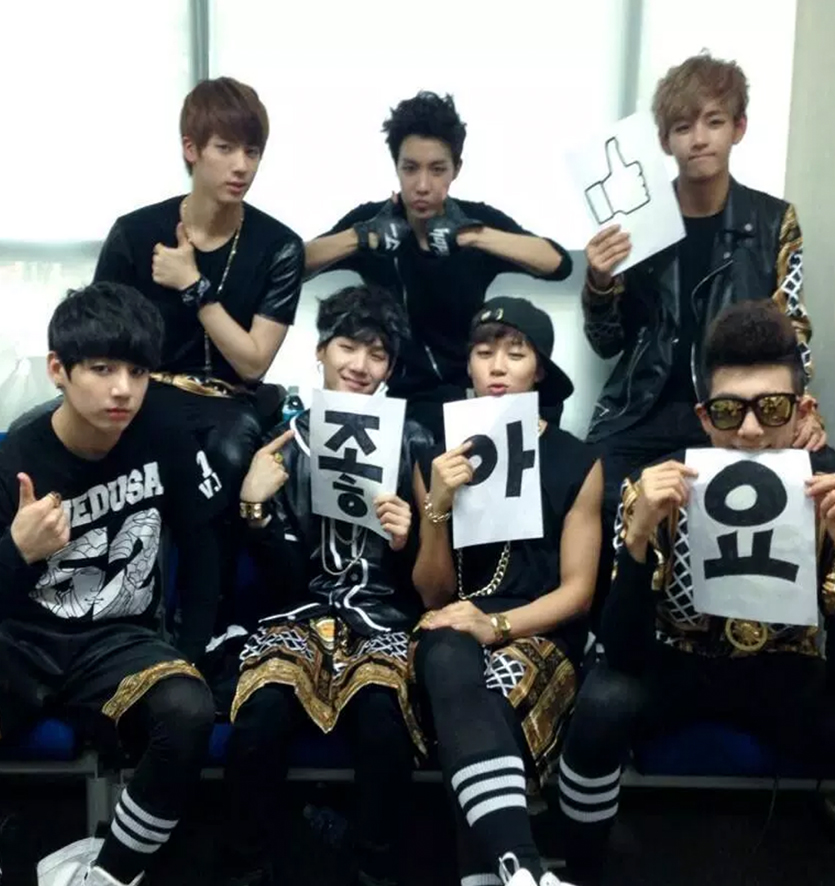
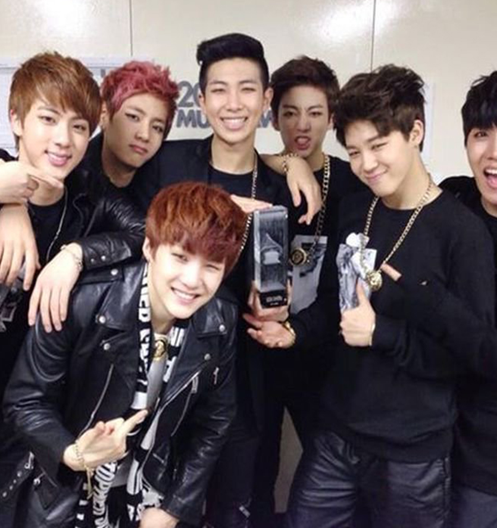
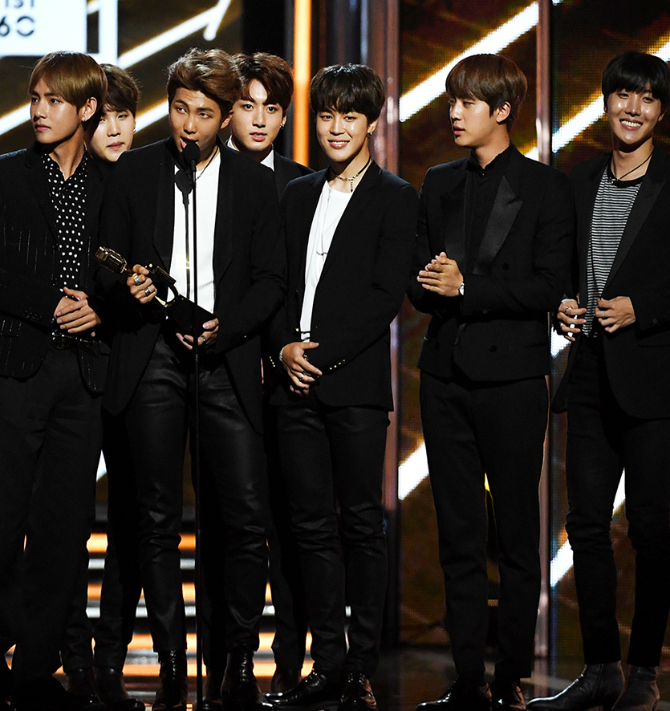
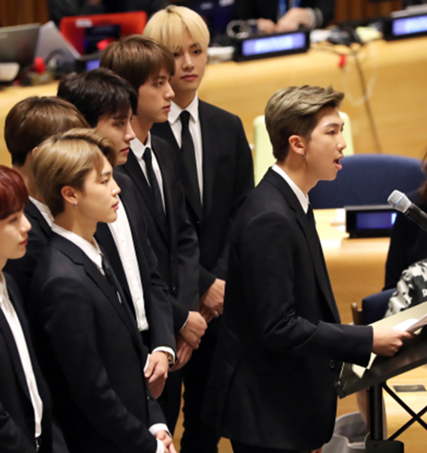
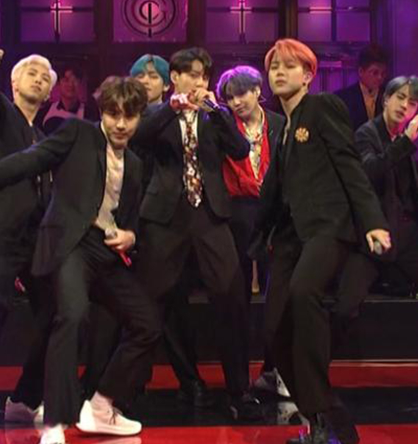

BTS (Hangul: 방탄소년단; RR: Bangtan Sonyeondan), also known as the Bangtan Boys, is a seven-member South Korean boy band formed by BigHit Entertainment.
The group consists of RM (rapper and leader), Jin (vocalist), Suga (rapper), J-Hope (rapper), Jimin (vocalist), V (vocalist), and Jungkook (vocalist).








